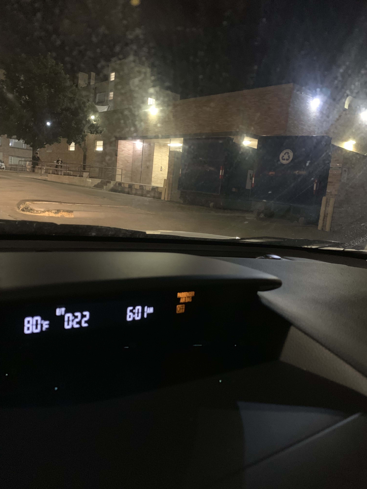
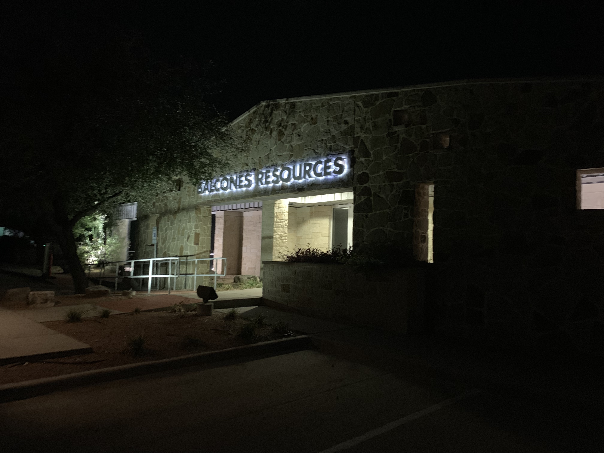
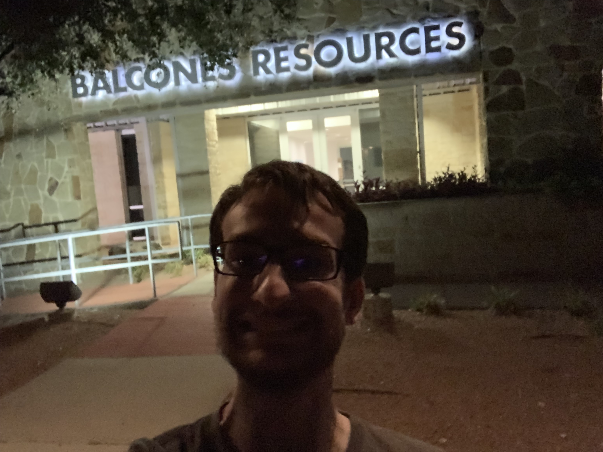

Background
I decided to research a mystery: what happens to all of the University of Texas at Austin's waste? I investigated my question by talking to people in charge of UT's resource recovery and zero waste initiatives. From my conversations, I was able to literally follow the recycling from campus (image 1) to the recycling plant (images 2 and 3).
  One of the biggest things I learned from my research was that the UT community only sorts about 70% of its waste correctly. In other words, 30% of what is recycled is actually trash and 30% of what is thrown into the trash can is actually recycling.
In an effort to improve the recycling efficiency, I created this basic trash/recycling sorting game that uses p5.js and images from trashnet. This project is hosted by GitHub Pages and the code can be found on GitHub